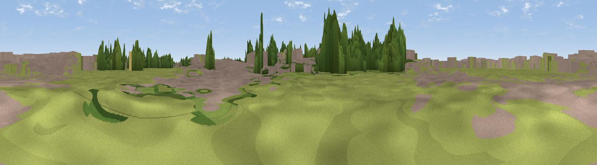

27L Runway Viewing Area, Myrtle Avenue
#43777 in England · top 61% of its area beats it · near HattonThe view, rendered

A 360° render of this exact spot computed from the terrain model, tree cover and land cover — summer colours, afternoon light, calibrated against photographs of famous viewpoints. Real trees, hedges and buildings will differ in detail.
The panorama
Grey silhouette: terrain skyline in each direction (720 bearings, Earth curvature and refraction included). Dashed green: skyline with trees (+15 m) and buildings (+8 m) as obstacles. Blue strip: how far the ground is visible on each bearing.
Where the view opens
Wedge length = distance to the farthest visible ground on that bearing (vegetation-aware). Rings at 10, 25 and 50 km.
What fills the view
43% grassland · 35% built-up · 21% woodland ·
Angular shares of the visible panorama (visual magnitude), not map area. Landscape diversity 0.49 (0–1 Shannon).
Key numbers
More beautiful places nearby
The staircase of upgrades: each row has a higher view potential than everything closer. Driving times are estimates from straight-line distance, calibrated against real road routing — check an actual route before setting out.
| Place | Direction | Drive | Score |
|---|---|---|---|
| Monolith Hill | SSW · 3 km | ~7 min | 29.6 |
| Viewpoint near Colham Green | N · 6 km | ~13 min | 41.0 |
| Viewpoint near Hayes End | N · 9 km | ~17 min | 48.1 |
| St Ann's Hill | SW · 10 km | ~19 min | 51.8 |
| Viewpoint near Bishopsgate | WSW · 11 km | ~20 min | 53.6 |
| Harrow on the Hill | NNE · 14 km | ~25 min | 60.7 |
| Box Hill | SSE · 26 km | ~42 min | 70.4 |
| Viewpoint near Box Hill Village | SSE · 26 km | ~42 min | 71.0 |
51.46390, -0.42773 · source: osm viewpoint · position refined by local search. Computed location — check access rights before visiting.